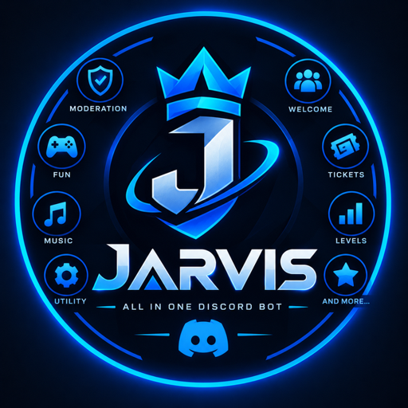
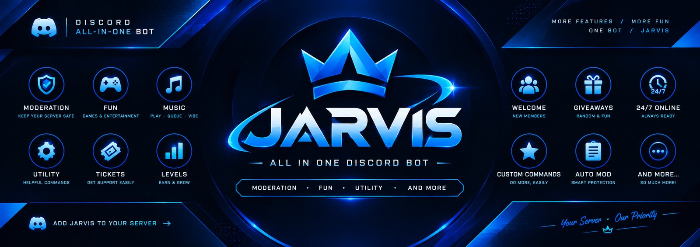

JARVIS, a free Discord bot
I built JARVIS to replace the five or six bots most servers end up running: moderation, tickets, music, levels, giveaways, an AI chat channel and more. Everything is free.

Everything a server needs
Moderation, tickets, music, levels and the rest. Anything you do not use can stay off.
What each part does
A short look at every feature, with an example of how it looks.
How it looks in Discord
Mostly buttons, menus and forms, so you do not have to remember long commands.
Slash or prefix
Every command works as /play and with a prefix like !play. Admins can change the prefix with /prefix.
Set it up in three steps
Add the bot
Click Add to Discord, pick your server and approve the permissions.
Run the setup
Type /setup wizard. It asks for the welcome channel, logs and a few other things with menus. After that, /ticket setup if you want tickets and /antinuke enable for protection.
Try it
Join a voice channel and play a song with /play. /help lists everything.
Tip for antinuke: drag the JARVIS role to the top of your role list so it can act on anyone below it.
Give the bot your own look
I can set a custom name, picture, banner and bio for the bot inside your server. Other servers do not see it.
Custom bot profile
I set this up by hand for you, and you can change or remove it whenever you like. It costs money because it is manual work. Every feature of the bot stays free.
Open a ticket in the support server and I will tell you the price and what I need from you.
Open a ticketCommon questions
Is JARVIS free?
Yes. The only thing that costs money is the optional custom bot profile (your own name, picture and banner for the bot in your server).
Which permissions does it need?
The invite does not ask for Administrator. It asks only for what the features need: Manage Channels, Manage Roles, Ban and Kick Members, View Audit Log, Manage Messages, Manage Webhooks, Connect, Speak and similar. If a feature says it is missing a permission, give the bot that permission in the channel, and make sure the JARVIS role is above the roles it manages.
Where can it play music from?
SoundCloud, Spotify songs, albums and playlists, and direct audio links. It can stay in a voice channel 24/7 with /247 enable.
How does antinuke work?
You decide how many channel deletes, role deletes, bans, kicks and so on are allowed in how many seconds, and what happens after that (ban, kick, remove roles or a timeout). If someone goes over, the bot acts and tells the owner. Deleted channels and roles are put back. You can whitelist people you trust.
What data do you store?
Only what features need, like settings, levels and tickets. See the privacy policy. Data is deleted when the bot leaves your server.
Something is not working. Who do I ask?
Ask in the support server (link in the footer).

Add JARVIS to your server
Free, and it takes about two minutes.